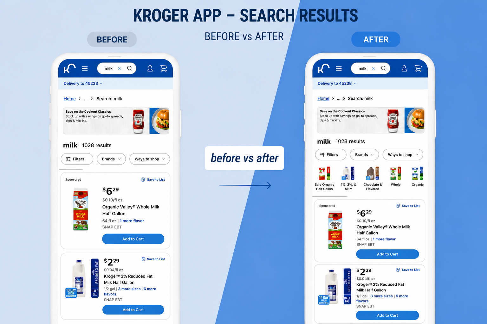

Enhancing Search Filtering at Kroger
How two rounds of moderated research reshaped Kroger's filtering experience — from an overlooked panel buried in the sidebar to a visible, visual, and useful tool that helped customers find what they actually wanted.

01 — Result
Three changes. A measurably better search experience.
By making filters visible, useful, and personalised — and by reducing result set noise — customers could find what they were looking for faster, with less frustration and fewer dead-end queries.
02 — Problem & context
Grocery shopping is a chore. Search was supposed to make it easier.
Kroger's search had a filtering experience that was, in a word, underwhelming. Filters were buried in a sidebar panel, inconsistently designed across web and mobile, and limited to basic category-level options. Customers who needed to narrow down a broad search — "chicken", "pasta", "snacks" — were left staring at hundreds of results with no clear path to what they wanted.
Two things were making this worse than it needed to be. First, the filter panel was hard to find and harder to use — customers often gave up and retyped their query instead. Second, the filters that did exist didn't reflect what Kroger customers actually cared about. Price and savings — core reasons people shop at a grocery retailer — were not filterable at all.
The business opportunity was clear: a better filtering experience meant customers reaching the right products faster, which meant fewer abandoned sessions and more items added to cart. The challenge was knowing exactly what "better" looked like for a grocery context — which is where the research came in.
03 — My role
Research lead, designer, and advocate for the customer.
I was involved end-to-end across this project — not just as the designer executing on a brief, but as the person who helped define what needed to change and why.
- Planned and ran two rounds of moderated research — a holistic search study and a filters-focused competitive benchmark — collaborating with the research team to define hypotheses, recruit participants, and facilitate sessions.
- Synthesised insights and produced recommendations — distilled findings from both studies into prioritised recommendations (high / medium / low impact), which I presented to the Product Manager and Senior Management.
- Owned all design decisions — from visual filter components to the information architecture of the filter panel — including exploring and killing directions that didn't hold up in testing.
- Drove alignment across functions — worked closely with the PM (Brooke Burkel) and our Sr. PD Manager (Nicola Cimino) to ensure decisions were grounded in data and feasible within engineering constraints.
04 — Process
Two studies. Clearer answers than we expected.
We ran research in two phases. The first was a broad, moderated holistic study of Kroger's search experience — understanding how customers actually use search when grocery shopping online. The second was a more focused competitive benchmark study comparing Kroger's refinement experience against Target and Walmart.
Study 1 — Holistic Search Study
We went in expecting to learn about search queries and result relevancy. What we learned about filters surprised us: the majority of participants said they would refine their search query before ever touching a filter. Not because they preferred it that way — but because Kroger's filters weren't visible or compelling enough to try.
Once participants did engage with filters or related tags, their behaviour changed — they used them repeatedly. The problem wasn't desire; it was discoverability. Key quotes from participants captured it well:
"I don't know how to filter this. This makes it look like it won't help me."
The study also surfaced two filters customers wanted most but didn't have: price range and savings/promotions. These weren't nice-to-haves — for grocery shoppers, budget awareness is a primary shopping behaviour. Price was the #2 priority filter across all participants; savings were considered essential for promotion-aware shoppers.
Study 2 — Refinement Simplification Benchmark
With the holistic study pointing at filters as a high-leverage area, we ran a second, focused study — comparing Kroger's refinement experience against Target and Walmart on both desktop and mobile, with 10–15 Kroger customers.
The findings were definitive on three points:
- Visual filters (tags with images) were immediately noticed and engaged with — participants described them as highly relevant and used them within seconds. Kroger had the raw ingredient (related tags), but they weren't visually differentiated enough to stand out.
- Inconsistent filter behaviour was a major source of confusion — all participants were confused about why some filter options allowed multi-select and others didn't. The lack of a consistent "you can select multiple" affordance made the whole panel feel unreliable.
- When filters failed, customers went back to the search box — a clear signal that we were pushing work back onto users. Participants used a maximum of two words per query before trying to refine, which meant an oversized result set was the default experience for most searches.
Prioritising the work
Based on both studies, I structured the recommendations into three tiers. The high-impact items — the ones that would move the needle most on both usability and business outcomes — became the core of the design brief:
- High impact: Combine visual navigation and tags into a single, prominent filter component at the top of results
- High impact: Make all filter options behave consistently — multi-select, view selected, remove selected
- High impact: Add price and savings as first-class filter options
- Medium impact: Add dietary preference filters (organic, gluten-free, etc.)
- Medium impact: Improve relevancy — reduce the result set for broad queries
05 — Design decisions
Three improvements, each grounded in what we heard.
1. Visual filters at the top of results
The research was unambiguous: visual filters with images were immediately noticed, quickly engaged with, and rated as highly relevant. The problem wasn't that customers didn't want to filter — it was that the entry point wasn't visible enough to prompt the behaviour.
The decision was to bring a horizontal strip of visual filter chips — images + label — to the top of search results, above the product grid. This made filtering a first-class action rather than something you had to hunt for in a panel. The trade-off: it required a new component and coordination with engineering to surface the right category images dynamically. We prioritised the most common search categories first.
2. New filters: savings, price, and dietary preferences
Adding new filter types sounds straightforward — but the challenge was deciding which ones, in what order, and how to present them without overwhelming the panel. The research gave us a clear hierarchy: savings and price first, because those were the most universally desired. Dietary preferences (organic, gluten-free, vegan) came next, as they served a vocal and loyal segment of Kroger's customer base.
We chose to surface savings and price prominently within the visual filter strip rather than burying them in the panel — reinforcing the idea that budget-aware shopping is a primary use case, not an edge case.
3. Improved relevancy — fewer, better results
The holistic study surfaced a consistent theme: result sets were overwhelming. Participants abandoned searches rather than scroll through hundreds of items. This wasn't a filtering problem alone — it was a relevancy problem upstream. Broad queries like "chicken" were returning 1,000+ results with minimal ranking signal to guide what showed first.
Working with the engineering and product team, we tightened the relevancy model and introduced a default result cap for broad queries — cutting result sets from 1,000+ to ~160. The goal wasn't to hide options; it was to surface the most relevant 160 and let filters do the rest. The outcome: a measurable uplift in add-to-cart conversion, because customers reached products that matched their intent much faster.
06 — Outcome & impact
Filters went from overlooked to a primary navigation tool.
Across all three improvements, the shift was the same: features customers had been ignoring became features they actively used. Visual filters drove immediate engagement in both the research sessions and post-launch. The new savings and price filters met a need that had existed all along — customers just hadn't had the tool. And the relevancy improvements removed a source of passive frustration that had been costing us conversions without being visible in qualitative feedback.
The project also reinforced something I'll carry into every research-led project: the most useful findings aren't always what you go in looking for. We ran the holistic study expecting to learn about search queries. We came out with the clearest signal yet that filters were the highest-leverage area on the results page — and that shaped 18 months of subsequent work.
The research gave us permission to be bold. Without it, "make the filters better" would have meant small tweaks. Instead, it meant rethinking the whole entry point.